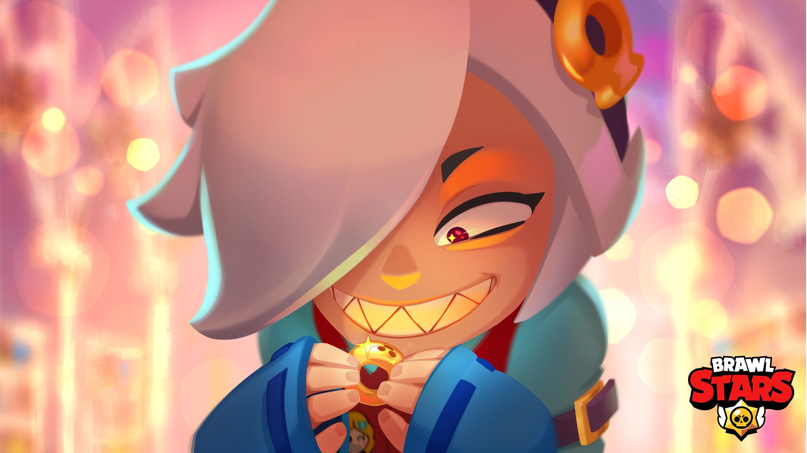
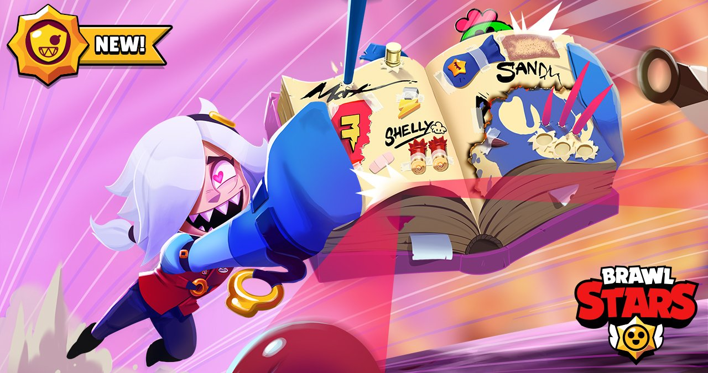

Colette
Acerca

Este es un antitanque por excelencia, su implmento en el juego fue para reducir el poderío de los tanques en el juego, actualmente no es la antitanque no.1 del juego, pero si que es muy utilizada en modos de juego, donde es de acercarse y mantenerse lejos al mismo tiempo, esto por la función de su pasiva.
| Stat | Descripción |
|---|---|
| Vida | 6.460 |
| Velocidad de movimiento | Nomal |
| Daño | 1.900 |
| Rango de ataque | Largo |
| Velocidad de recarga | Normal |
La pasiva de este personaje es aventarse de frente en linea recta donde hará daño de ida como de vuelta, pero cuidado, que no es inmune durante su pasiva y tampoco sirve, para huir, al menos no sin la power star correcta.
| Daño | 3.800 |
| Rango | Muy Largo |

Sus power stars y gadgets son unicos para este perosnaje:
| Power Star | Descripción | Gadget | Descripción |
|---|---|---|---|
| Push it | La carga de ida de la pasiva empujará a los enemigos. | Na-ah! | El siguiente ataque dará 1000 de daño extra. |
| Mass tax | Con la pasiva y aún después de usarla, obtendrá una reducción del 20 % de daño, durante 5 segundo y el escudo podrá aumentar en 10% por cada enemigo que haya golpeado con la pasiva. | Gotcha! | Los siguientes ataques, durante 5 segundos, curarán a Colette 1000 HP |
Abajo se ve una demostración del barwler en acción.